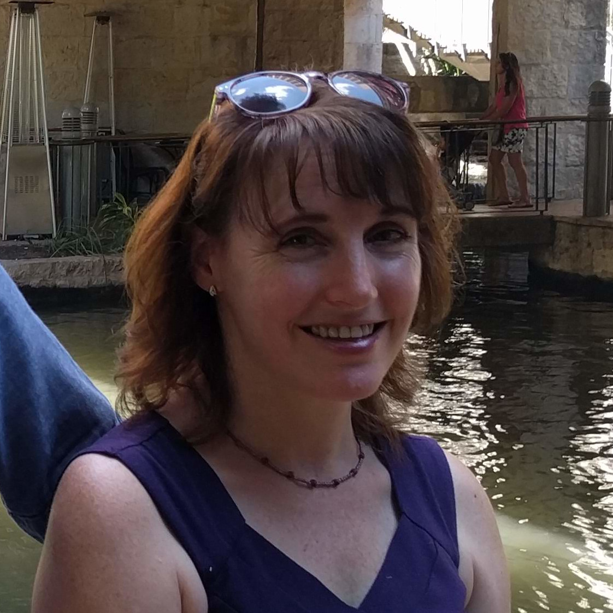
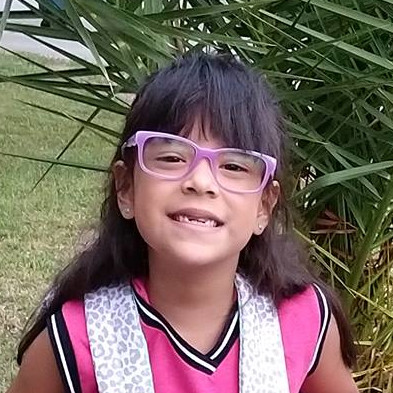
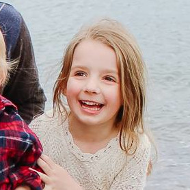
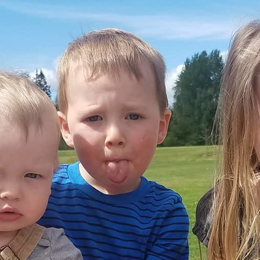

WEDDING PARTY
PAIGE HARDY
MAID OF HONOR
Alicia's best friend from high school. Rest assured they'll entertain and distract each other during the reception with tic-tac-toe -- just like they did in their high school theology class.

NICHOLAS HOZA
BEST MAN
William's younger older brother. They shared a room growing up. Some nights Mom would make Nicholas sleep on the sofa so they would stop talking. Other nights they would compete to fall asleep first. The rule was, anyone who remembered the competition had to say so and check if the other was awake.

PAIGE KUBENKA
BRIDESMAID
Alicia's roommate, guinea pig sitter, and the couple's best third wheel. She lives in daily fear that William and Alicia will name their children after cheeses. (C'mon, Brie is a name!)
JIMMY "HEINRICH" HOZA
GROOMSMAN
William's older older brother. As the first child in the family, he gave all the other kids a model to look up to and emulate, e.g., when he left a snake on the kitchen counter and forgot about it.
EMILY HOZA
BRIDESMAID
She married into the Hoza family and survived, so Alicia is (pretty) sure she can do it too. As William's brother's wife, Emily and Alicia are going to be sisters-in-law and no one can tell them differently!
MATT MORGAN
GROOMSMAN
William's friend from college. Ask him an impossible and ridiculous question. He'll probably enjoy the taste of his own medicine.

CASSIE GUARDIOLA
BRIDESMAID
One of Alicia's close friends, she keeps Alicia up-to-date with internet slang and provides much needed love and acceptance when Alicia needs it.
SIMON LUU
GROOMSMAN
William's friend from high school. He lives in Maryland, but he wanted to surprise William for his birthday last year, so he convinced Gehn (coming up next) to come along and coordinated with Alicia who threw an amazing surprise party. William never saw any of it coming.
JENNA SALAZAR
BRIDESMAID
She and Alicia clicked from the day they met. She needs to be by Alicia's side throughout the wedding day to laugh at Alicia's jokes.

GEHN FERGUSON
GROOMSMAN
William's friend from high school. One time he and William drove to Portland to get a tour of a factory that made pipes and things. It was pretty cool.

MAURA TORRES
MOTHER OF THE BRIDE
Easily the most fun mom of any Alicia has ever met. Alicia is only mildly concerned that she's becoming more like her with each passing year.

ROSEANNE HOZA
MOTHER OF THE GROOM
She has made William truly vast quantities of customized, delicious, gluten-free food over the years. Sometimes William feels bad and tries to tell her to not go to the trouble, but she's unstoppable.

ALFRED TORRES
FATHER OF THE BRIDE
William's best audience for punny jokes. He's made sure Alicia has never had to worry about moving, changing the oil in her car, or being unprepared for the future.

BRADLEY HOZA
FATHER OF THE GROOM
He taught William how to skillfully craft premium jokes.

EMILY TORRES
FLOWER GIRL
Alicia's little sister (or is she her clone?) wants to know "can we get some action at this wedding? Maybe a swimming pool?"

KATRINA HOZA
FLOWER GIRL
William's niece. Here's a poem she wrote: "I have carrots / I have peas / I have all the western seas." © 2018, all rights reserved

CARSON HOZA
RING BEARER
William's nephew. He once judged a bird-noise-making competition between William and Alicia.